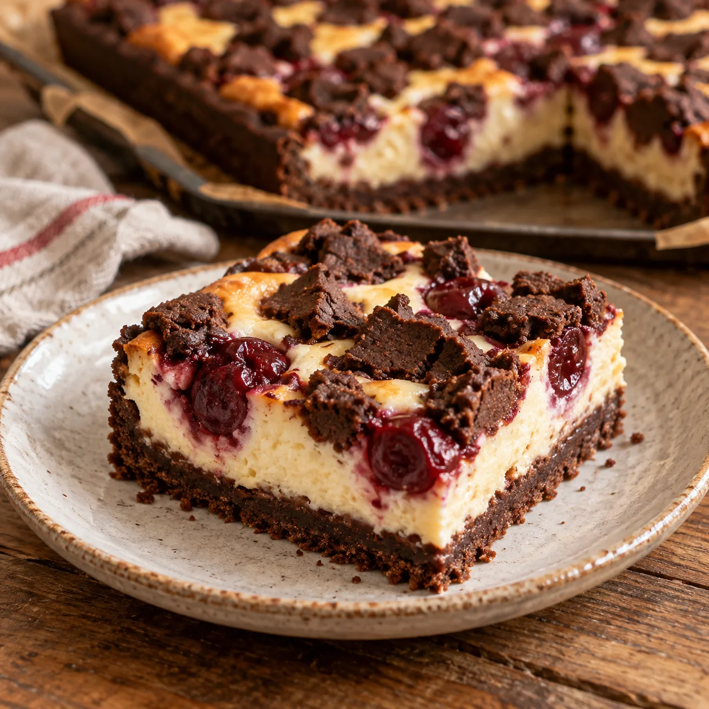

Was Süßes geht immer · Kuchen & Torten
Russischer Zupfkuchen mit Kirschen

Schokoladig, fruchtig und herrlich cremig: Dieser russische Zupfkuchen vom Blech bekommt durch die Sauerkirschen eine wunderbar saftige, leicht säuerliche Note.
Für den Schokomürbeteig
425 gWeizenmehl
40 gKakaopulver
3 gestr. TLBackpulver
200 gZucker
2 Pck.Vanillezucker
2Eier, Größe M
250 gButter
1 PriseSalz
Für die Quarkcreme
250 gButter
1 kgMagerquark
250 gZucker
2 Pck.Vanille-Puddingpulver
4Eier, Größe M
Außerdem
1 GlasSauerkirschen
EtwasButter zum Einfetten
Zubereitung
- Die Sauerkirschen in ein Sieb geben und gut abtropfen lassen. Ein Backblech von etwa 30 × 40 cm sorgfältig einfetten.
- Für den Teig Mehl, Kakao und Backpulver mischen und in eine Rührschüssel sieben. Zucker, Vanillezucker, Eier, Butter und Salz dazugeben. Erst kurz auf niedriger, dann auf höchster Stufe zu einem glatten Teig verkneten. Den Teig auf einer leicht bemehlten Arbeitsfläche kurz durchkneten, einwickeln und kalt stellen.
- Etwa zwei Drittel des Teiges gleichmäßig auf dem Backblech verteilen und ausrollen. Den Backofen auf 180 °C Ober-/Unterhitze oder 160 °C Umluft vorheizen.
- Für die Füllung die Butter zerlassen und etwas abkühlen lassen. Magerquark, Zucker, Puddingpulver und Eier mit dem Schneebesen des Handrührgeräts zu einer glatten Creme verrühren. Zuletzt die flüssige, abgekühlte Butter unterrühren.
- Die Quarkcreme auf dem Schokoboden verteilen und glatt streichen. Die abgetropften Kirschen darauf verteilen. Den restlichen Teig in kleine Stücke zupfen, bei Bedarf leicht mit Mehl bestäuben und dekorativ zwischen den Kirschen verteilen.
- Den Kuchen im vorgeheizten Ofen etwa 45 Minuten backen. Anschließend das Blech auf ein Kuchengitter stellen und den Kuchen vollständig auskühlen lassen.